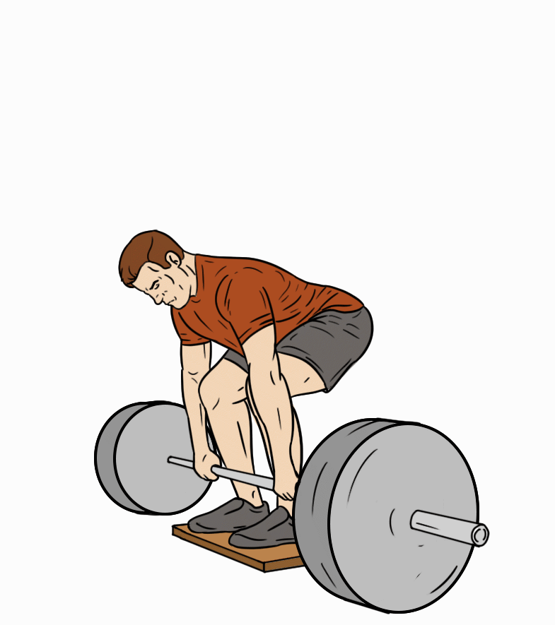

Mariusz Pudzianowski to polski zawodnik mieszanych sztuk walki (MMA), wcześniej utytułowany strongman i rugbysta. Ośmiokrotny Mistrz Polski Strongman. Sześciokrotny Mistrz Europy Strongman. Pięciokrotny Mistrz Świata Strongman w latach. Trzykrotny drużynowy Mistrz Świata Par Strongman w latach. Mistrz Super Serii w sezonach. Zwycięzca i finalista wielu innych zawodów siłaczy. Mariusz Pudzianowski jest synem sztangisty, Wojciecha Pudzianowskiego, który był jego pierwszym trenerem sportów siłowych. Trenował karate kyokushin (obecnie posiada 4 kyu), rugby oraz boks (jednak przed 11 grudnia 2009 r. nie stoczył żadnej oficjalnej walki).
Ulubione powiedzenie pudziana to "POLSKA GÓRĄ":
2004 r. Arnold Strongman
2005 r. Super Seria
2003 r. Super Seria Hawaje
Przysiad ze sztangą

390 kg
Martwy ciąg
415 kg
Wyciskanie leżąc

295 kg
Kuba i Kacper krzyczą Polska górą